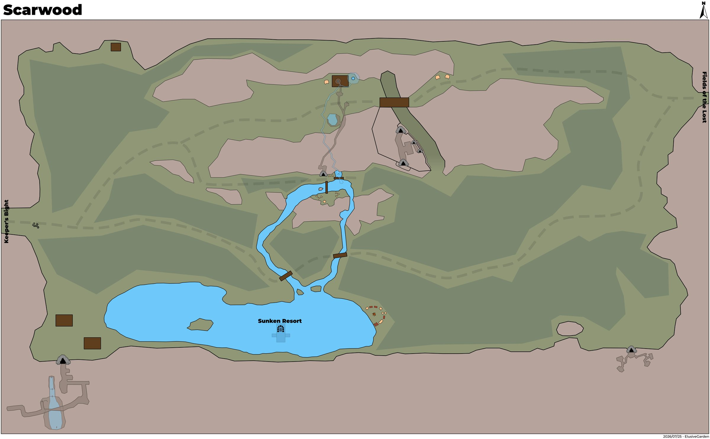
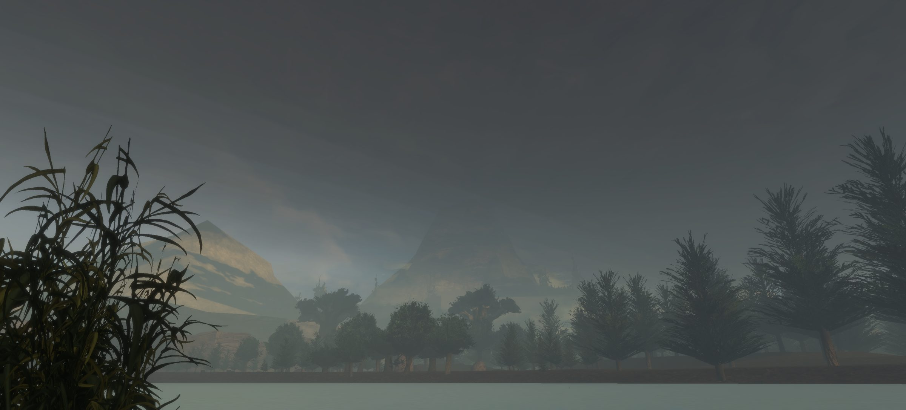

Scarwood
Little is known of Scarwood at this time.
Map


Named mobs
| Named | Lvl | Race / class | Where | Known loot (hover) |
|---|---|---|---|---|
| Garran Grinholdt | 28 | Human / Melee | Bandit Camp | Ravine-Woven Bracer, Grinholdt's Showpiece, Bracer of the Redmark Pact, Redmark Spaulders |
| Thorne Grinholdt | 28 | Human / Melee | Bandit Camp | Bandit Chain Boots, Raiders' Rimeplates, Tanned Sinew Bracer, Bundle of Arrows |
| Krev Thistlehook | 35 | Human / Archer | Poachers | Pocket Knife, Hunting Longbow |
| Yurl Rootrender | 45 | Giant / Druid | Giant Roadway | Voice of the Land Sabatons, Mirebloom Choker, Rootrender's Stave, Corrupted Scout Gloves |
| Dregath Warwake | 46-47 | Giant / Shadow Knight | Corrupted Giant Camp | Giant's Chain, Obscure Broadsword, Rimeflesh Spaulders, Mireguard |
| Krothun Veincarver | - | Giant / Melee | Giant Caves | Giant Bow, Giant's Loincloth, Giant Mining Pick |
Mobs & NPCs (camps by level)
Rows with a level are huntable camps; rows without are usually town NPCs or not yet documented.
| Name | Lvl | Race | Class | Where | Notes |
|---|---|---|---|---|---|
| a grizzly bear | 25 | Bear | Melee | - | |
| a timber wolf | 25 | Wolf | Melee | - | |
| a bandit | 26 | Human | Archer | - | |
| a bulky bandit | 26 | Human | Melee | - | |
| a trail bandit | 26 | Human | Ranger | - | |
| a mist bat | 28-30 | Bat | - | - | |
| a bone-nocker poacher | 34 | Human | Archer | - | |
| a green drake | 34 | Drake | - | - | |
| a lake goblin | 34? | Goblin | - | In the Lake | Rusty Iron Weapons/Armor, Tattered Cloth Armor |
| a rough poacher | 34-35 | Human | Melee | - | |
| a scentmasking poacher | 35 | Human | Ranger | - | |
| a flickering fragment | 36-37 | Wisp | - | - | |
| a grovebound treant | 38+ | Treant | - | - | |
| a madening echo | 38+ | Wisp | Pet Caster | - | |
| a treant | 38+ | Treant | - | - | |
| an arboreal spirit | 38+ | Treant | - | - | |
| a black drake | 40-41 | Drake | - | - | |
| a corrupted hill giant | 44-47 | Giant | Melee | Corrupted Giant Camp | Giant Tree Feller |
| a Druidic sojouner | ? | Human | - | ||
| a Sojouner bowman | ? | Human | - | ||
| a shady poacher | - | human | - | - | |
| an Ail'trist cleric | ? | Human | - | ||
| an Ail'trist sentry | ? | Human | - |
Quests
| Quest | Reward | Giver | Min lvl |
|---|---|---|---|
| Example Quest Name | Example Reward | Example Quest Giver | - |
| Example Quest Name | Example Reward | Example Quest Giver | - |
Gear that drops here
| Slot | Item | Key stats (wiki) | How to get | Lvl | Classes |
|---|---|---|---|---|---|
| Primary, Secondary | Torch | Effect: Torch (Passive. Must Equip. Level: 1) | Quest: Pests at the Farm (Farmer Ammar, Night Harbor, min lvl 1) Vendor: A goods merchant — Night Harbor, Shallow Shoals; A greedy halfling — Night Harbor; A shifty elf — Evershade Weald Crafted: Survival (trivial X) Drop: A rotting skeleton (lvl 1) — Night Harbor, Noob Yard | 1 | All classes |
| Primary, Secondary | Corroded Bronze Axe | DMG 9 / DLY 42 | Drop: a bulky bandit (lvl 26) — Scarwood, - Drop: a risen commander (lvl -) — Shaded Dunes, Ancient Crypt Entrance Drop: an ashira warrior (lvl 6-7) — Sungreet Strand, - Drop: an ashira preserver (lvl -) — Sungreet Strand, - | 6 | BST FTR INQ PAL RNG SHD SPB |
| Primary | Corroded Bronze Battle Axe | DMG 14 / DLY 54 | Drop: an ashira huntmaster (lvl 16-18) — Tel Ekir, - Drop: an ashira ain guard (lvl -) — Tel Ekir, - Drop: a Bloodynose spooker (lvl ~13-14) — Tel Ekir, - Drop: a skeletal acolyte (lvl 17) — Ancient Crypt, - | 6 | BST FTR INQ PAL SHD |
| Neck | Corroded Bronze Chain Gorget | AC 2 | Drop: an ashira huntmaster (lvl 16-18) — Tel Ekir, - Drop: an ashira mystic (lvl -) — Tel Ekir, - Drop: a Bloodynose schemer (lvl unconfirmed) — Tel Ekir Drop: an ashira warrior (lvl 6-7) — Sungreet Strand, - | 6 | BRD CLR FTR INQ PAL RNG ROG SHD SHM |
| Legs | Corroded Bronze Chain Leggings | AC 8 | Drop: an ashira ain guard (lvl -) — Tel Ekir, - Drop: a Bloodynose captain (lvl 16) — Tel Ekir, - Drop: a Bloodynose schemer (lvl unconfirmed) — Tel Ekir Drop: a trail bandit (lvl 26) — Scarwood, - | 6 | BRD CLR FTR INQ PAL RNG ROG SHD SHM |
| Shoulders | Corroded Bronze Chain Shoulderguards | AC 8 | Drop: a Sangrel striker (lvl 18-22) — Keeper's Bight, - Drop: a poacher pathfinder (lvl 28-30) — Keeper's Bight, Poacher Camp, Bear Cave Drop: a Sangrel hunter (lvl 18-22) — Keeper's Bight, - Drop: a Blacktide brute (lvl 25) — Keeper's Bight, - | 6 | BRD CLR FTR INQ PAL RNG ROG SHD SHM |
| Chest | Corroded Bronze Chain Tunic | AC 9 | Drop: an ashira ain guard (lvl -) — Tel Ekir, - Drop: a Bloodynose witch doctor (lvl 15) — Tel Ekir, - Drop: a skeletal soldier (lvl 17) — Ancient Crypt, - Drop: a dusty skeleton (lvl -) — Fallen Pass, - | 6 | BRD CLR FTR INQ PAL RNG ROG SHD SHM |
| Primary, Secondary | Corroded Bronze Dagger | DMG 5 / DLY 24 | Drop: an ashira ain guard (lvl -) — Tel Ekir, - Drop: an ashira naturalist (lvl -) — Tel Ekir, - Drop: a skeletal acolyte (lvl 17) — Ancient Crypt, - Drop: a skeletal soldier (lvl 17) — Ancient Crypt, - | 6 | ARC BRD BST ELE ENC FTR NEC RNG ROG SHD SHM SPB WIZ |
| Primary | Corroded Bronze Great Scythe | DMG 12 / DLY 46 | Drop: a skeletal soldier (lvl 17) — Ancient Crypt, - Drop: a skeletal acolyte (lvl 17) — Ancient Crypt, - Drop: a ghastly cook (lvl 16) — Ancient Crypt, - Drop: a cultist (lvl -) — Shaded Dunes, Ancient Crypt Entrance | 6 | BST DRU FTR INQ NEC RNG SHD SPB |
| Secondary | Corroded Bronze Kite Shield | AC 8 | Drop: a Sangrel striker (lvl 18-22) — Keeper's Bight, - Drop: a mercenary magus (lvl unconfirmed) — Keeper's Bight Drop: a poacher pathfinder (lvl 28-30) — Keeper's Bight, Poacher Camp, Bear Cave Drop: a Bloodynose frightener (lvl ~15-18) — Tel Ekir, - | 6 | BRD FTR INQ PAL RNG SHD |
| Primary | Corroded Bronze Long Spear | DMG 12 / DLY 48 | Drop: an ashira alpha (lvl ~14) — Tel Ekir, - Drop: a Bloodynose frightener (lvl ~15-18) — Tel Ekir, - Drop: a Bloodynose witch doctor (lvl 15) — Tel Ekir, - Drop: a restless skeleton (lvl 18-21) — Fallen Pass, - | 6 | ARC BRD BST FTR INQ RNG ROG SHD SHM |
| Chest | Corroded Bronze Plate Breastplate | AC 11 | Drop: a Sangrel striker (lvl 18-22) — Keeper's Bight, - Drop: a Muggrah brawler (lvl 20+) — Sungreet Strand, Muggrah Mountain Camp Drop: an ashira warrior (lvl 6-7) — Sungreet Strand, - Drop: a gruff farmhand (lvl unconfirmed) — Sungreet Strand | 6 | CLR FTR INQ PAL SHD |
| Back | Corroded Bronze Plate Cloak | AC 4 | Drop: a skeletal soldier (lvl 17) — Ancient Crypt, - Drop: a fallen sergeant (lvl ~18-20) — Ancient Crypt, - Drop: an ashira warrior (lvl 6-7) — Sungreet Strand, - Drop: a Muggrah scrapper (lvl 17+) — Sungreet Strand, Muggrah Mountain Camp | 6 | CLR FTR INQ PAL SHD |
| Hands | Corroded Bronze Plate Gauntlets | AC 8 | Drop: an ashira ain guard (lvl -) — Tel Ekir, - Drop: a stumbling skeleton (lvl 14) — Night Harbor, Crypt (Night) Drop: a river pirate (lvl unconfirmed) — Night Harbor Drop: a mercenary (lvl unconfirmed) — Night Harbor | 6 | CLR FTR INQ PAL SHD |
| Waist | Corroded Bronze Plate Girdle | AC 4 | Drop: a Muggrah brawler (lvl 20+) — Sungreet Strand, Muggrah Mountain Camp Drop: an ashira warrior (lvl 6-7) — Sungreet Strand, - Drop: a henchman (lvl unconfirmed) — Sungreet Strand Drop: a Muggrah scrapper (lvl 17+) — Sungreet Strand, Muggrah Mountain Camp | 6 | CLR FTR INQ PAL SHD |
| Head | Corroded Bronze Plate Helm | AC 9 | Drop: a bulky bandit (lvl 26) — Scarwood, - Drop: a ghastly cook (lvl 16) — Ancient Crypt, - Drop: a restless skeleton (lvl 18-21) — Fallen Pass, - Drop: a dusty skeleton (lvl -) — Fallen Pass, - | 6 | CLR FTR INQ PAL SHD |
| Primary, Secondary | Corroded Bronze Scimitar | DMG 7 / DLY 36 | Drop: an ashira ain guard (lvl -) — Tel Ekir, - Drop: an ashira naturalist (lvl -) — Tel Ekir, - Drop: a Bloodynose witch doctor (lvl 15) — Tel Ekir, - Drop: a Bloodynose frightener (lvl ~15-18) — Tel Ekir, - | 6 | ARC BRD BST DRU FTR INQ PAL RNG ROG SHD SPB WIZ |
| Primary, Secondary | Corroded Bronze Scythe | DMG 6 / DLY 28 | Drop: a skeletal soldier (lvl 17) — Ancient Crypt, - Drop: a fallen sentinel (lvl 19) — Ancient Crypt, - Drop: a Muggrah brawler (lvl 20+) — Sungreet Strand, Muggrah Mountain Camp Drop: an ashira warrior (lvl 6-7) — Sungreet Strand, - | 6 | BST DRU FTR INQ NEC RNG SHD SPB |
| Primary, Secondary | Corroded Bronze Shortsword | DMG 5 / DLY 26 | Drop: an ashira ain guard (lvl -) — Tel Ekir, - Drop: an ashira alpha (lvl ~14) — Tel Ekir, - Drop: an ashira naturalist (lvl -) — Tel Ekir, - Drop: a Bloodynose frightener (lvl ~15-18) — Tel Ekir, - | 6 | ARC BRD BST FTR INQ PAL RNG ROG SHD SPB WIZ |
| Primary, Secondary | Corroded Bronze Trident | DMG 7 / DLY 32 | Drop: a skeletal soldier (lvl 17) — Ancient Crypt, - Drop: an ashira luminary (lvl unconfirmed) — Sungreet Strand Drop: an ashira spearthrower (lvl ~20) — Sungreet Strand, - Drop: a Muggrah naturest (lvl unconfirmed) — Sungreet Strand | 6 | ARC BRD BST FTR INQ RNG ROG SHD SHM |
| Primary | Corroded Bronze War Lance | DMG 12 / DLY 48 | Drop: a stumbling skeleton (lvl 14) — Night Harbor, Crypt (Night) Drop: a lawbreaker (lvl unconfirmed) — Night Harbor Drop: a smuggler (lvl unconfirmed) — Night Harbor Drop: a goon (lvl unconfirmed) — Night Harbor | 6 | FTR INQ PAL SHD |
| Primary, Secondary | Corroded Bronze Warhammer | DMG 6 / DLY 30 | Drop: a Sangrel shadowblade (lvl 18-22) — Keeper's Bight, - Drop: a poacher pathfinder (lvl 28-30) — Keeper's Bight, Poacher Camp, Bear Cave Drop: a Blacktide raider (lvl 23-24) — Keeper's Bight, - Drop: a Sangrel striker (lvl 18-22) — Keeper's Bight, - | 6 | BRD BST CLR DRU FTR INQ MNK PAL RNG ROG SHD SHM SPB |
| Primary, Secondary | Cracked Fine Wood Staff | DMG 7 / DLY 33 | Drop: an ashira ain guard (lvl -) — Tel Ekir, - Drop: an ashira spearthrower (lvl -) — Tel Ekir, - Drop: a Bloodynose frightener (lvl ~15-18) — Tel Ekir, - Drop: an ashira naturalist (lvl -) — Tel Ekir, - | 6 | All classes |
| Waist | Tattered Hide Belt | AC 5 | Drop: an ashira naturalist (lvl -) — Tel Ekir, - Drop: an ashira elite guard (lvl ~27) — Tel Ekir, - Drop: an ashira spearthrower (lvl -) — Tel Ekir, - Drop: a Sangrel grappler (lvl 18-22) — Keeper's Bight, - | 6 | ARC BRD BST CLR DRU FTR INQ MNK PAL RNG ROG SHD SHM SPB |
| Wrist | Tattered Hide Bracer | AC 3 | Drop: a zealot (lvl unconfirmed) — Keeper's Bight Drop: a poacher pathfinder (lvl 28-30) — Keeper's Bight, Poacher Camp, Bear Cave Drop: a Sangrel striker (lvl 18-22) — Keeper's Bight, - Drop: a Blacktide brute (lvl unconfirmed) — Blacktide Bay | 6 | ARC BRD BST CLR DRU FTR INQ MNK PAL RNG ROG SHD SHM SPB |
| Head | Tattered Hide Cap | AC 4 | Drop: Mirrielle Bromm (lvl unconfirmed) — Fallen Pass Drop: a dusty skeleton (lvl -) — Fallen Pass, - Drop: a restless ghoul (lvl -) — Fallen Pass, - Drop: a restless skeleton (lvl 18-21) — Fallen Pass, - | 6 | ARC BRD BST CLR DRU FTR INQ MNK PAL RNG ROG SHD SHM SPB |
| Neck | Tattered Hide Gorget | AC 2 | Drop: an ashira spearthrower (lvl -) — Tel Ekir, - Drop: a Bloodynose captain (lvl 16) — Tel Ekir, - Drop: an ashira naturalist (lvl -) — Tel Ekir, - Drop: a Blacktide raider (lvl unconfirmed) — Blacktide Bay | 6 | ARC BRD BST CLR DRU FTR INQ MNK PAL RNG ROG SHD SHM SPB |
| Legs | Tattered Hide Leggings | AC 6 | Drop: an ashira alpha (lvl ~14) — Tel Ekir, - Drop: an ashira bruiser (lvl -) — Tel Ekir, - Drop: an ashira drunk (lvl -) — Tel Ekir, - Drop: an ashira ain guard (lvl -) — Tel Ekir, - | 6 | ARC BRD BST CLR DRU FTR INQ MNK PAL RNG ROG SHD SHM SPB |
| Face | Tattered Hide Mask | AC 2 | Drop: an ashira fisher (lvl -) — Tel Ekir, - Drop: an ashira adept (lvl -) — Tel Ekir, - Drop: an ashira stalker (lvl -) — Tel Ekir, - Drop: an ashira elite guard (lvl ~27) — Tel Ekir, - | 6 | ARC BRD BST CLR DRU FTR INQ MNK PAL RNG ROG SHD SHM SPB |
| Chest | Tattered Hide Tunic | AC 7 | Drop: a shady farmer (lvl -) — Keeper's Bight, Farms, south of Penshaw Drop: a poacher pathfinder (lvl 28-30) — Keeper's Bight, Poacher Camp, Bear Cave Drop: a Sangrel striker (lvl 18-22) — Keeper's Bight, - Drop: a bulky bandit (lvl 26) — Scarwood, - | 6 | ARC BRD BST CLR DRU FTR INQ MNK PAL RNG ROG SHD SHM SPB |
| Shirt | Tattered Hide Vest | no stats listed on wiki | Drop: an ashira ain guard (lvl -) — Tel Ekir, - Drop: an ashira alpha (lvl ~14) — Tel Ekir, - Drop: an ashira naturalist (lvl -) — Tel Ekir, - Drop: a Bloodynose captain (lvl 16) — Tel Ekir, - | 6 | ARC BRD BST CLR DRU FTR INQ MNK PAL RNG ROG SHD SHM SPB |
| Head | Tattered Wool Cap | AC 3 | Drop: a Bloodchain sentry (lvl unconfirmed) — Blacktide Bay Drop: a Blacktide bowman (lvl unconfirmed) — Blacktide Bay Drop: an ashira spearthrower (lvl -) — Tel Ekir, - Drop: an ashira bruiser (lvl -) — Tel Ekir, - | 6 | All classes |
| Neck | Tattered Wool Gorget | AC 3 | Drop: a Bloodynose captain (lvl 16) — Tel Ekir, - Drop: an ashira luminary (lvl -) — Tel Ekir, - Drop: an ashira bruiser (lvl -) — Tel Ekir, - Drop: an ashira ain guard (lvl -) — Tel Ekir, - | 6 | All classes |
| Legs | Tattered Wool Pantaloons | AC 3 | Drop: an ashira ain guard (lvl -) — Tel Ekir, - Drop: a Bloodynose frightener (lvl ~15-18) — Tel Ekir, - Named drop: General Overlord Bloodynose (lvl 20+) — Tel Ekir, - Drop: an ashira huntmaster (lvl 16-18) — Tel Ekir, - | 6 | All classes |
| Chest | Tattered Wool Tunic | AC 4 | Drop: a Sangrel striker (lvl 18-22) — Keeper's Bight, - Drop: a Blacktide brute (lvl 25) — Keeper's Bight, - Drop: a Sangrel shadowblade (lvl 18-22) — Keeper's Bight, - Drop: a Blacktide raider (lvl 23-24) — Keeper's Bight, - | 6 | All classes |
| Range | Worn Fine Wood Bow | DMG 10 / DLY 40 | Named drop: Researcher Harseal (lvl 16) — Ancient Crypt, - Drop: a skeletal acolyte (lvl 17) — Ancient Crypt, - Named drop: Brahson the Butcher (lvl ~17) — Ancient Crypt, - Drop: a skeletal soldier (lvl 17) — Ancient Crypt, - | 6 | ARC BST FTR INQ PAL RNG ROG SHD SPB |
| Secondary | Worn Fine Wood Buckler | AC 6 | Drop: an ashira warrior (lvl 6-7) — Sungreet Strand, - Drop: an ashira luminary (lvl unconfirmed) — Sungreet Strand Drop: an ashira spearthrower (lvl ~20) — Sungreet Strand, - Drop: a gruff farmhand (lvl unconfirmed) — Sungreet Strand | 6 | BRD BST CLR DRU FTR INQ PAL RNG ROG SHD SHM SPB |
| Primary | Worn Fine Wood Great Staff | DMG 12 / DLY 46 | Drop: a Blacktide brute (lvl unconfirmed) — Blacktide Bay Drop: a bandit (lvl 26) — Scarwood, - Drop: a bulky bandit (lvl 26) — Scarwood, - Drop: a ghastly cook (lvl 16) — Ancient Crypt, - | 6 | BST CLR DRU ELE ENC FTR MNK NEC PAL SHM SPB WIZ |
| Wrist | Corroded Bronze Chain Wristguard | AC 4 | Drop: a Bloodynose voodooist (lvl ~16-18) — Tel Ekir, - Drop: an ashira mystic (lvl -) — Tel Ekir, - Drop: a lawbreaker (lvl unconfirmed) — Night Harbor Drop: a drunken cleric (lvl unconfirmed) — Night Harbor | 12 | BRD CLR FTR INQ PAL RNG ROG SHD SHM |
| Wrist | Corroded Bronze Plate Bracer | AC 7 | Drop: a burning skeleton (lvl -) — Ancient Crypt, - Drop: a skeletal soldier (lvl 17) — Ancient Crypt, - Drop: a skeletal guard (lvl ~12-15) — Ancient Crypt, - Drop: a dusty skeleton (lvl -) — Fallen Pass, - | 12 | CLR FTR INQ PAL SHD |
| Legs | Corroded Bronze Plate Greaves | AC 10 | Drop: a skeletal guard (lvl ~12-15) — Ancient Crypt, - Drop: an enforcer (lvl unconfirmed) — Night Harbor Drop: a goon (lvl unconfirmed) — Night Harbor Drop: a cunning privateer (lvl -) — Night Harbor, - | 12 | CLR FTR INQ PAL SHD |
| Shoulders | Tattered Wool Mantle | AC 3 | Drop: A dusty skeleton (lvl -) — Fallen Pass, - Drop: Mirrielle Bromm (lvl unconfirmed) — Fallen Pass Drop: a restless ghoul (lvl -) — Fallen Pass, - Drop: a restless skeleton (lvl 18-21) — Fallen Pass, - | 13 | All classes |
| Primary, Secondary | Corroded Bronze Mace | DMG 8 / DLY 40 | Drop: a cultist (lvl -) — Shaded Dunes, Ancient Crypt Entrance Drop: a risen deacon (lvl -) — Shaded Dunes, Ancient Crypt Entrance Drop: an ashira alpha (lvl ~14) — Tel Ekir, - Drop: a Bloodynose sergeant (lvl 15) — Tel Ekir, - | 14 | BRD BST CLR DRU FTR INQ MNK PAL RNG ROG SHD SHM SPB |
| Face | Tattered Wool Veil | AC 1 | Drop: an ashira ain guard (lvl -) — Tel Ekir, - Drop: an ashira alpha (lvl ~14) — Tel Ekir, - Named drop: Najm the Mirage (lvl 32) — Tel Ekir, Pillar Hut Drop: an ashira bruiser (lvl -) — Tel Ekir, - | 14 | All classes |
| Back | Corroded Bronze Chain Cloak | AC 3 | Drop: a Sangrel striker (lvl 18-22) — Keeper's Bight, - Drop: a poacher pathfinder (lvl 28-30) — Keeper's Bight, Poacher Camp, Bear Cave Drop: a Blacktide raider (lvl 23-24) — Keeper's Bight, - Drop: a Sangrel hunter (lvl 18-22) — Keeper's Bight, - | 15 | BRD CLR FTR INQ PAL RNG ROG SHD SHM |
| Face | Corroded Bronze Chain Mask | AC 3 | Drop: a Bloodynose sergeant (lvl 15) — Tel Ekir, - Drop: an ashira mystic (lvl -) — Tel Ekir, - Drop: a corrupted ashira (lvl ~26) — Vale of Zintar, Corrupted Ashira Camp Drop: a corrupted outrider (lvl ~26) — Vale of Zintar, Corrupted Ashira Camp | 15 | BRD CLR FTR INQ PAL RNG ROG SHD SHM |
| Primary | Corroded Bronze Greatsword | DMG 13 / DLY 50 | Drop: a shady farmer (lvl -) — Keeper's Bight, Farms, south of Penshaw Drop: a poacher pathfinder (lvl 28-30) — Keeper's Bight, Poacher Camp, Bear Cave Drop: a Sangrel shadowblade (lvl 18-22) — Keeper's Bight, - Drop: a skeletal soldier (lvl 17) — Ancient Crypt, - | 15 | ARC BRD BST FTR INQ PAL RNG SHD SPB |
| Primary | Corroded Bronze Maul | DMG 13 / DLY 52 | Drop: a corrupted adept (lvl ~26) — Vale of Zintar, Corrupted Ashira Camp Drop: a corrupted ashira (lvl ~26) — Vale of Zintar, Corrupted Ashira Camp Drop: a Dustrend venator (lvl ~29-30) — Vale of Zintar, - Drop: an ashira ain guard (lvl -) — Tel Ekir, - | 15 | BRD BST CLR DRU FTR INQ MNK PAL RNG ROG SHD SHM SPB |
| Wrist | Tattered Wool Bracer | AC 3 | Drop: an ashira ain guard (lvl -) — Tel Ekir, - Drop: a Bloodynose frightener (lvl ~15-18) — Tel Ekir, - Drop: an ashira mystic (lvl -) — Tel Ekir, - Drop: a skeletal soldier (lvl 17) — Ancient Crypt, - | 15 | All classes |
| Hands | Tattered Wool Gloves | AC 2 | Drop: a Sangrel striker (lvl 18-22) — Keeper's Bight, - Drop: a poacher pathfinder (lvl 28-30) — Keeper's Bight, Poacher Camp, Bear Cave Drop: a Blacktide cleric (lvl 24-25) — Keeper's Bight, - Drop: a Blacktide guard (lvl 23-24) — Keeper's Bight, - | 15 | All classes |
| Head | Corroded Bronze Chain Coif | AC 7 | Drop: a Sangrel shadowblade (lvl 18-22) — Keeper's Bight, - Drop: a poacher pathfinder (lvl 28-30) — Keeper's Bight, Poacher Camp, Bear Cave Drop: a Sangrel striker (lvl 18-22) — Keeper's Bight, - Drop: an ancient elven fighter (lvl -) — Keeper's Bight, - | 16 | BRD CLR FTR INQ PAL RNG ROG SHD SHM |
| Waist | Corroded Bronze Chain Waistguard | AC 3 | Drop: a Sangrel shadowblade (lvl 18-22) — Keeper's Bight, - Drop: a poacher pathfinder (lvl 28-30) — Keeper's Bight, Poacher Camp, Bear Cave Drop: an ancient elven fighter (lvl -) — Keeper's Bight, - Drop: a Bloodynose stabber (lvl ~16-18) — Tel Ekir, - | 16 | BRD CLR FTR INQ PAL RNG ROG SHD SHM |
| Primary, Secondary | Corroded Bronze Longsword | DMG 8 / DLY 38 | Drop: an ashira ain guard (lvl -) — Tel Ekir, - Drop: a shady farmer (lvl -) — Keeper's Bight, Farms, south of Penshaw Drop: a poacher pathfinder (lvl 28-30) — Keeper's Bight, Poacher Camp, Bear Cave Drop: a Sangrel hunter (lvl 18-22) — Keeper's Bight, - | 16 | ARC BRD BST FTR INQ PAL RNG ROG SHD SPB WIZ |
| Shirt | Tattered Wool Shirt | no stats listed on wiki | Drop: a skeletal soldier (lvl 17) — Ancient Crypt, - Drop: a skeletal acolyte (lvl 17) — Ancient Crypt, - Drop: a ghastly cook (lvl 16) — Ancient Crypt, - Drop: a fallen sentinel (lvl 19) — Ancient Crypt, - | 16 | All classes |
| Feet | Tattered Hide Boots | AC 4 | Drop: a fallen sergeant (lvl ~18-20) — Ancient Crypt, - Drop: a skeletal soldier (lvl 17) — Ancient Crypt, - Drop: an ashira preserver (lvl -) — Sungreet Strand, - Drop: a Muggrah brawler (lvl 20+) — Sungreet Strand, Muggrah Mountain Camp | 17 | ARC BRD BST CLR DRU FTR INQ MNK PAL RNG ROG SHD SHM SPB |
| Hands | Tattered Hide Gloves | AC 4 | Drop: a bandit (lvl 26) — Scarwood, - Drop: a bulky bandit (lvl 26) — Scarwood, - Drop: an ashira preserver (lvl -) — Sungreet Strand, - Drop: a Muggrah scrapper (lvl 17+) — Sungreet Strand, Muggrah Mountain Camp | 17 | ARC BRD BST CLR DRU FTR INQ MNK PAL RNG ROG SHD SHM SPB |
| Secondary | Worn Ironbark Buckler | AC 10 | Drop: a Plagueborn knight (lvl ~42-44) — Fallen Pass, Western Beach Shrine, Elder Drake area Drop: a Plagueborn worshipper (lvl ~36-37) — Fallen Pass, Undead Citizens Drop: a Plagueborn veteran (lvl ~42-44) — Fallen Pass, Elder Drake area Drop: a dusty skeleton (lvl -) — Fallen Pass, - | 17 | BRD BST CLR DRU FTR INQ PAL RNG ROG SHD SHM SPB |
| Primary, Secondary | Rusty Steel Mace | DMG 13 / DLY 40 | Drop: a decaying drunk (lvl unconfirmed) — Glass Flats Drop: a fallen warden (lvl unconfirmed) — Glass Flats Drop: a herald (lvl unconfirmed) — Glass Flats Drop: an abyssal emissary (lvl ~48-50) — Glass Flats, - | 20 | BRD BST CLR DRU FTR INQ MNK PAL RNG ROG SHD SHM SPB |
| Primary, Secondary | Cracked Ironbark Staff | DMG 9 / DLY 33 | Drop: a poacher (lvl ~28-30) — Keeper's Bight, - Drop: a poacher bruiser (lvl 28-30) — Keeper's Bight, Poacher Camp, Bear Cave Drop: a poacher pathfinder (lvl 28-30) — Keeper's Bight, Poacher Camp, Bear Cave Named drop: Poacher Garrus (lvl >35) — Keeper's Bight, Poacher Camp | 27 | All classes |
| Back | Rusty Iron Plate Cloak | AC 5 | Drop: a cultist lookout (lvl 43) — Glass Flats, - Drop: a crystallized skeleton (lvl ~35-40) — Glass Flats, - Drop: a highwayman prospect (lvl ~31+) — Glass Flats, - Drop: a tormented guardian (lvl unconfirmed) — Glass Flats | 27 | CLR FTR INQ PAL SHD |
| Hands | Tattered Cotton Gloves | AC 4 | Drop: a poacher (lvl ~28-30) — Keeper's Bight, - Drop: a poacher bruiser (lvl 28-30) — Keeper's Bight, Poacher Camp, Bear Cave Drop: a poacher herbalist (lvl 28-30) — Keeper's Bight, Poacher Camp Named drop: Seamas Growt (lvl ~38+) — Fallen Pass, Pillars(wanders) | 27 | All classes |
| Shoulders | Tattered Leather Shoulderpads | AC 11 | Named drop: Seamas Growt (lvl ~38+) — Fallen Pass, Pillars(wanders) Drop: a Plagueborn worshipper (lvl ~36-37) — Fallen Pass, Undead Citizens Drop: a Plagueborn veteran (lvl ~42-44) — Fallen Pass, Elder Drake area Drop: a Plagueborn citizen (lvl ~36-37) — Fallen Pass, Undead Citizens | 27 | ARC BRD BST CLR DRU FTR INQ MNK PAL RNG ROG SHD SHM SPB |
| Feet | Bandit Chain Boots | AC 18, STR +5, STA +1, WIS +3 | Named drop: Thorne Grinholdt (lvl 28) — Scarwood, Bandit Camp | 28 | BRD CLR FTR INQ PAL RNG ROG SHD SHM |
| Wrist | Bracer of the Redmark Pact | AC 7, STR +4, HP +15 | Named drop: Garran Grinholdt (lvl 28) — Scarwood, Bandit Camp | 28 | All classes |
| Primary | Grinholdt's Showpiece | DMG 15 / DLY 37, STA +2, CHA +9, Mana +15 | Named drop: Garran Grinholdt (lvl 28) — Scarwood, Bandit Camp | 28 | All classes |
| Shoulders | Raiders' Rimeplates | AC 24, STR +2, STA +3, AGI +2 | Named drop: Thorne Grinholdt (lvl 28) — Scarwood, Bandit Camp | 28 | CLR FTR INQ PAL SHD |
| Wrist | Ravine-Woven Bracer | AC 8, STA +1, INT +5, CHA +1, Mana +5 | Named drop: Garran Grinholdt (lvl 28) — Scarwood, Bandit Camp | 28 | All classes |
| Shoulders | Redmark Spaulders | AC 27, STR +3, STA +6 | Named drop: Garran Grinholdt (lvl 28) — Scarwood, Bandit Camp | 28 | CLR FTR INQ PAL SHD |
| Wrist | Tanned Sinew Bracer | AC 11, WIS +4, HP +15 | Named drop: Thorne Grinholdt (lvl 28) — Scarwood, Bandit Camp | 28 | ARC BRD BST CLR DRU FTR INQ MNK PAL RNG ROG SHD SHM SPB |
| Back | Tattered Cotton Cape | AC 2 | Drop: a Witchguard venator (lvl unconfirmed) — Shallow Shoals Drop: a corrupted priestess (lvl unconfirmed) — Shallow Shoals Drop: a Witchguard defiler (lvl unconfirmed) — Shallow Shoals Drop: a Witchguard veles (lvl unconfirmed) — Shallow Shoals | 28 | All classes |
| Head | Tattered Leather Cap | AC 9 | Drop: a poacher (lvl ~28-30) — Keeper's Bight, - Drop: a poacher bruiser (lvl 28-30) — Keeper's Bight, Poacher Camp, Bear Cave Drop: a poacher pathfinder (lvl 28-30) — Keeper's Bight, Poacher Camp, Bear Cave Drop: a cultist guard (lvl 44) — Glass Flats, - | 28 | ARC BRD BST CLR DRU FTR INQ MNK PAL RNG ROG SHD SHM SPB |
| Chest | Tattered Leather Tunic | AC 11 | Drop: a Plagueborn veteran (lvl ~42-44) — Fallen Pass, Elder Drake area Named drop: Kallen Oison (lvl 37) — Fallen Pass Drop: a Plagueborn citizen (lvl ~36-37) — Fallen Pass, Undead Citizens Drop: a smuggler (lvl unconfirmed) — Fallen Pass | 28 | ARC BRD BST CLR DRU FTR INQ MNK PAL RNG ROG SHD SHM SPB |
| Primary, Secondary, Belt | Thistlefire Lantern | Effect: Lamp (Passive. Must Equip. Level 1) | Named drop: Garran Grinholdt (lvl 28) — Scarwood, Bandit Camp | 28 | All classes |
| Range | Worn Ironbark Bow | DMG 13 / DLY 40 | Drop: a cultist lookout (lvl 43) — Glass Flats, - Drop: a crystallized skeleton (lvl ~35-40) — Glass Flats, - Drop: a treant (lvl 38) — Glinting Hollow, - Drop: a flourishing treant (lvl 38) — Glinting Hollow, - | 28 | ARC BST FTR PAL RNG ROG SHD SPB |
| Range | Hunting Longbow | DMG 26 / DLY 48, STR +6, STA +1, AGI +4 | Named drop: Krev Thistlehook (lvl 35) — Scarwood, Poachers | 35 | ARC BST FTR INQ PAL RNG ROG SHD SPB |
| Primary, Secondary, Range | Pocket Knife | DMG 5 / DLY 25, STA +1, AGI +3, DEX +5 | Named drop: Krev Thistlehook (lvl 35) — Scarwood, Poachers | 35 | All classes |
| Primary | Rusty Steel Battle Axe | DMG 17 / DLY 54 | Drop: a Plagueborn watchman (lvl ~52-53) — Fallen Pass, Upper Saman Drop: a Plagueborn servant (lvl ~52-53) — Fallen Pass, Upper Saman Drop: a Plagueborn noble (lvl ~52-53) — Fallen Pass, Upper Saman Drop: a Plagueborn myrmidon (lvl ~54-55) — Fallen Pass, Upper Saman | 42 | BST FTR INQ PAL SHD |
| Shirt | Rusty Steel Chain Gambeson | no stats listed on wiki | Drop: a Plagueborn maiden (lvl ~52-53) — Fallen Pass, Upper Saman Named drop: Stablemaster Tomaz (lvl 52) — Fallen Pass, Lower Saman, Stables Drop: a Plagueborn stablehand (lvl ~52-53) — Fallen Pass, Upper Saman Drop: a Plagueborn servant (lvl ~52-53) — Fallen Pass, Upper Saman | 42 | BRD CLR FTR INQ PAL RNG ROG SHD SHM |
| Face | Rusty Steel Chain Mask | AC 5 | Drop: a Plagueborn watchman (lvl ~52-53) — Fallen Pass, Upper Saman Drop: a Plagueborn myrmidon (lvl ~54-55) — Fallen Pass, Upper Saman Drop: a Plagueborn housewarden (lvl ~42-44) — Fallen Pass, Elder Drake area Drop: a Plagueborn servant (lvl ~52-53) — Fallen Pass, Upper Saman | 42 | BRD CLR FTR INQ PAL RNG ROG SHD SHM |
| Primary | Rusty Steel Great Scythe | DMG 19 / DLY 46 | Drop: a Plagueborn servant (lvl ~52-53) — Fallen Pass, Upper Saman Drop: a Plagueborn maiden (lvl ~52-53) — Fallen Pass, Upper Saman Named drop: Felix Rathmere (lvl 45) — Fallen Pass, - Drop: a Plagueborn evoker (lvl unconfirmed) — Fallen Pass | 42 | BST DRU FTR INQ NEC RNG SHD SPB |
| Secondary | Rusty Steel Kite Shield | AC 18 | Drop: a skeletal footman (lvl -) — Glass Flats, - Drop: a veiled emissary (lvl ~48-50) — Glass Flats, - Drop: an abyssal emissary (lvl ~48-50) — Glass Flats, - Drop: a tormented guardian (lvl unconfirmed) — Glass Flats | 42 | BRD CLR FTR INQ PAL RNG SHD |
| Primary, Secondary | Rusty Steel Longsword | DMG 9 / DLY 38 | Drop: a skeletal archer (lvl unconfirmed) — Glass Flats Drop: a haunted traveler (lvl unconfirmed) — Glass Flats Drop: an immolated grovekeeper (lvl unconfirmed) — Glass Flats Drop: a skeletal footman (lvl -) — Glass Flats, - | 42 | ARC BRD BST FTR INQ PAL RNG ROG SHD SPB WIZ |
| Primary | Rusty Steel Maul | DMG 16 / DLY 52 | Drop: a skeletal reveler (lvl unconfirmed) — Glass Flats Drop: a risen servant (lvl unconfirmed) — Glass Flats Drop: a wyrmseer (lvl ~48-50) — Glass Flats, - Drop: a fallen warden (lvl unconfirmed) — Glass Flats | 42 | BRD BST CLR DRU FTR INQ MNK PAL RNG ROG SHD SHM SPB |
| Primary, Secondary | Rusty Steel Scimitar | DMG 12 / DLY 36 | Drop: a skeletal reveler (lvl unconfirmed) — Glass Flats Drop: a charred grovekeeper (lvl unconfirmed) — Glass Flats Named drop: Master Tracker Lark (lvl 45) — Glass Flats, Lower Broken Tower Drop: a drowned knight (lvl 52) — Glass Flats, - | 42 | ARC BRD BST DRU FTR INQ PAL RNG ROG SHD SPB WIZ |
| Primary, Secondary | Rusty Steel Scythe | DMG 7 / DLY 28 | Drop: a Plagueborn watchman (lvl ~52-53) — Fallen Pass, Upper Saman Drop: a Plagueborn myrmidon (lvl ~54-55) — Fallen Pass, Upper Saman Drop: a Plagueborn servant (lvl ~52-53) — Fallen Pass, Upper Saman Drop: a Plagueborn hag (lvl -) — Fallen Pass, - | 42 | BST DRU FTR INQ NEC RNG SHD SPB |
| Primary, Secondary | Rusty Steel Shortsword | DMG 9 / DLY 26 | Drop: a skeletal reveler (lvl unconfirmed) — Glass Flats Drop: a charred grovekeeper (lvl unconfirmed) — Glass Flats Drop: a charred tracker (lvl unconfirmed) — Glass Flats Drop: an immolated grovekeeper (lvl unconfirmed) — Glass Flats | 42 | ARC BRD BST FTR INQ PAL RNG ROG SHD SPB WIZ |
| Secondary | Rusty Steel Tower Shield | AC 22 | Drop: a sand giant raider (lvl ~45) — Vale of Zintar, Fishing Camp Drop: a sand giant geomancer (lvl ~54-57) — Vale of Zintar, Giant City Drop: a sand giant bandit (lvl ~45) — Vale of Zintar, Giant City, Fishing Camp Drop: a sand giant suncaller (lvl ~54-57) — Vale of Zintar, Giant City | 42 | FTR INQ PAL SHD |
| Primary | Rusty Steel War Lance | DMG 20 / DLY 48 | Drop: a Plagueborn watchman (lvl ~52-53) — Fallen Pass, Upper Saman Drop: a Plagueborn noblewoman (lvl unconfirmed) — Fallen Pass Named drop: Felix Rathmere (lvl 45) — Fallen Pass, - Drop: a Plagueborn maid (lvl ~52-53) — Fallen Pass, Upper Saman | 42 | FTR INQ PAL SHD |
| Primary, Secondary | Rusty Steel Warhammer | DMG 10 / DLY 30 | Drop: a Witchguard myrmidon (lvl unconfirmed) — Shallow Shoals Drop: a skeletal footman (lvl -) — Glass Flats, - Drop: a cult initiate (lvl 45) — Glass Flats, - Drop: an abyssal emissary (lvl ~48-50) — Glass Flats, - | 42 | BRD BST CLR DRU FTR INQ MNK PAL RNG ROG SHD SHM SPB |
| Waist | Tattered Linen Belt | AC 3 | Drop: a fallen warden (lvl unconfirmed) — Glass Flats Drop: a risen servant (lvl unconfirmed) — Glass Flats Drop: a visiting cultist (lvl ~48-50) — Glass Flats, - Drop: a crystallized suncaller (lvl -) — Glass Flats, - | 42 | All classes |
| Chest | Tattered Linen Tunic | AC 10 | Drop: a skeletal reveler (lvl unconfirmed) — Glass Flats Drop: a ghastly peasant (lvl unconfirmed) — Glass Flats Drop: a risen servant (lvl unconfirmed) — Glass Flats Drop: a visiting cultist (lvl ~48-50) — Glass Flats, - | 42 | All classes |
| Face | Tattered Linen Veil | AC 3 | Drop: a decaying reservist (lvl -) — Glass Flats, - Drop: a haunted traveler (lvl unconfirmed) — Glass Flats Drop: an ebon acolyte (lvl unconfirmed) — Glass Flats Drop: an abyssal emissary (lvl ~48-50) — Glass Flats, - | 42 | All classes |
| Waist | Rusty Steel Plate Girdle | AC 6 | Drop: a skeletal footman (lvl -) — Glass Flats, - Drop: a wyrmseer vizier (lvl ~48-50) — Glass Flats, - Drop: an apostle (lvl unconfirmed) — Glass Flats Drop: a skeletal quartermaster (lvl unconfirmed) — Glass Flats | 43 | CLR FTR INQ PAL SHD |
| Wrist | Tattered Padded Leather Bracer | AC 9 | Drop: a skeletal archer (lvl unconfirmed) — Glass Flats Drop: a heretical zealot (lvl ~48-50) — Glass Flats, - Drop: a charred peasant (lvl unconfirmed) — Glass Flats Drop: a charred grovekeeper (lvl unconfirmed) — Glass Flats | 43 | ARC BRD BST CLR DRU FTR INQ MNK PAL RNG ROG SHD SHM SPB |
| Chest | Rusty Steel Chain Tunic | AC 22 | Drop: a Plagueborn watchman (lvl ~52-53) — Fallen Pass, Upper Saman Drop: a Plagueborn stablehand (lvl ~52-53) — Fallen Pass, Upper Saman Drop: a Plagueborn nobleman (lvl ~52-53) — Fallen Pass, Upper Saman Drop: a Plagueborn myrmidon (lvl ~54-55) — Fallen Pass, Upper Saman | 44 | BRD CLR FTR INQ PAL RNG ROG SHD SHM |
| Wrist | Rusty Steel Chain Wristguard | AC 12 | Drop: a skeletal footman (lvl -) — Glass Flats, - Drop: an abyssal emissary (lvl ~48-50) — Glass Flats, - Drop: a wyrmseer (lvl ~48-50) — Glass Flats, - Drop: a fallen freeman (lvl -) — Glass Flats, - | 44 | BRD CLR FTR INQ PAL RNG ROG SHD SHM |
| Primary | Rusty Steel Greatsword | DMG 15 / DLY 50 | Drop: a slime covered skeleton (lvl 49-51) — Sungreet Strand, - Drop: a haunted messenger (lvl unconfirmed) — Glass Flats Drop: an abyssal emissary (lvl ~48-50) — Glass Flats, - Drop: a whispering adept (lvl unconfirmed) — Glass Flats | 44 | ARC BRD BST FTR INQ PAL RNG SHD SPB |
| Shirt | Rusty Steel Plate Arming Doublet | no stats listed on wiki | Drop: a Plagueborn myrmidon (lvl ~54-55) — Fallen Pass, Upper Saman Drop: a Plagueborn watchman (lvl ~52-53) — Fallen Pass, Upper Saman Drop: a Plagueborn stablehand (lvl ~52-53) — Fallen Pass, Upper Saman Drop: a Plagueborn servant (lvl ~52-53) — Fallen Pass, Upper Saman | 44 | CLR FTR INQ PAL SHD |
| Hands | Corrupted Scout Gloves | AC 23, STR +7, STA +3, AGI +6 | Named drop: Yurl Rootrender (lvl 45) — Scarwood, Giant Roadway | 45 | ARC BRD BST CLR DRU FTR INQ MNK PAL RNG ROG SHD SHM SPB |
| Neck | Mirebloom Choker | CHA +3, Mana +20, SV Magic +4 | Named drop: Yurl Rootrender (lvl 45) — Scarwood, Giant Roadway | 45 | All classes |
| Primary | Rootrender's Stave | DMG 21 / DLY 37, INT +13, SV Magic +7, SV Poison +2 | Named drop: Yurl Rootrender (lvl 45) — Scarwood, Giant Roadway | 45 | All classes |
| Feet | Voice of the Land Sabatons | AC 33, WIS +7, Mana +35 | Named drop: Yurl Rootrender (lvl 45) — Scarwood, Giant Roadway | 45 | CLR FTR INQ PAL SHD |
| Neck | Giant's Chain | AC 7, STA +8, HP +15 | Named drop: Dregath Warwake (lvl 46-47) — Scarwood, Corrupted Giant Camp | 46 | All classes |
| Secondary | Mireguard | AC 24, WIS +7, SV Poison +4 | Named drop: Dregath Warwake (lvl 46-47) — Scarwood, Corrupted Giant Camp | 46 | BRD CLR DRU FTR INQ PAL RNG SHD SHM |
| Primary | Obscure Broadsword | DMG 29 / DLY 44, AC 8, STA +15, HP +40, Mana +25 | Named drop: Dregath Warwake (lvl 46-47) — Scarwood, Corrupted Giant Camp | 46 | ARC BRD BST FTR INQ PAL RNG SHD SPB |
| Shoulders | Rimeflesh Spaulders | AC 24, STR +6, AGI +4, HP +5 | Named drop: Dregath Warwake (lvl 46-47) — Scarwood, Corrupted Giant Camp | 46 | ARC BRD BST CLR DRU FTR INQ MNK PAL RNG ROG SHD SHM SPB |
| Back | Giant's Loincloth | AC 9, STA +7, HP +25, SV Fire +2 | Named drop: Krothun Veincarver (lvl -) — Scarwood, Giant Caves | any / ? | CLR FTR INQ PAL SHD |
| Range | Giant Bow | DMG 22 / DLY 37, STR +6, STA +2, DEX +1, HP +10 | Named drop: Krothun Veincarver (lvl -) — Scarwood, Giant Caves | any / ? | ARC BST FTR INQ PAL RNG ROG SHD SPB |
Dangers
- fact Highest-level named on the wiki list: Dregath Warwake (46-47), Yurl Rootrender (45), Krev Thistlehook (35).
- fact Monster types (wiki): Bears, Snakes, Drakes, Wolves, Giants, Humanoids, Treants, Wisps.
- strategy The zone spans levels 24–50, so higher mobs share the map with low ones; check con colors before pulling near the named above.
Travel (wiki)
- Evershade Weald
- Fields of the Lost
fact Listed in the wiki zone infobox; boat and portal stops are as written there.